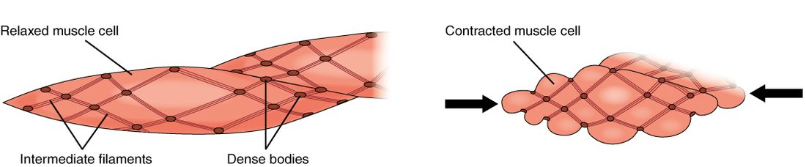

Smooth muscle and cardiac muscle
Smooth muscle fibers have no sarcomeres: thin filaments are anchored to dense bodies linked by intermediate filaments, and myosin heads line the whole thick filament, so the fibers shorten far and work over a wide range of lengths.
Part 1 · Clinical hook
Why this matters
Ms. Grant, 31, is giving birth. Every three minutes the muscular wall of her uterus tightens for about a minute, then eases, and she cannot stop or start the waves by choosing to. For nine months the same wall stretched to hold a growing baby without squeezing hard. Both behaviors come from smooth muscle, which uses the same actin and myosin as the muscles of her arms but switches them on in a completely different way.
Part 2 · Foundations
What this builds on
Part 3 · Prerequisite check
Quick check before you start
1. What does a gap junction do between two cells?
- Lets ions pass directly from one cell's cytoplasm to the next
- Rivets the cells together against pulling
- Seals the space between them so nothing leaks through
Show the answer
A gap junction is a set of channels joining two cells' cytoplasm, so ions, and with them electrical changes, pass straight from cell to cell. Desmosomes rivet cells; tight junctions seal them.
- Correct: Lets ions pass directly from one cell's cytoplasm to the next:
- Rivets the cells together against pulling:
- Seals the space between them so nothing leaks through:
2. In skeletal muscle, what does calcium bind to switch on contraction?
- Myosin heads
- Troponin
- Actin directly
Show the answer
Calcium released from the SR binds troponin, which moves tropomyosin off the binding sites on actin so cross-bridges can form.
- Myosin heads:
- Correct: Troponin:
- Actin directly:
3. Which muscle tissue is striated and joined by intercalated discs?
- Smooth muscle
- Skeletal muscle
- Cardiac muscle
Show the answer
Cardiac muscle is striated like skeletal muscle, but its short, branched fibers are joined end to end by intercalated discs.
- Smooth muscle:
- Skeletal muscle:
- Correct: Cardiac muscle:
Part 4 · Anatomy panel
Anatomy

With labels hidden, select a box to reveal its label.
Part 5 · Causal chain
How it works, step by step
- A stimulus, such as stretch of the wall or a spreading wave from a pacesetter cell, depolarizes a smooth muscle fiber.Voltage-gated calcium channels in the sarcolemma open, and calcium flows in from the extracellular fluid.
- Calcium in the cytosol rises and binds calmodulin.Calcium–calmodulin activates myosin light-chain kinase.
- Myosin light-chain kinase moves phosphate from ATP onto the myosin heads.The phosphorylated heads bind actin and cross-bridges cycle.
- Cross-bridges pull thin filaments anchored to dense bodies.The dense bodies are drawn together, and the fiber shortens and puckers; gap junctions spread the signal, so the whole sheet contracts.
- During a long contraction, calcium falls partway, and myosin phosphatase removes phosphate from some heads while they are still attached to actin.Those latch-bridges detach very slowly, so tension is held for a long time on little ATP; only when calcium falls fully do they let go and the fiber relaxes.
Part 6 · Key ideas
Key ideas
- The stress-relaxation response is the way smooth muscle, after being stretched, slowly lets its tension fall back while it stays at the new length. It lets hollow organs such as the bladder fill without a steep rise in tension.
- Autorhythmicity (auto- = self, rhythm- = regular beat) is the ability to set a rhythm with no outside signal. A small share of cardiac fibers drift to threshold on their own and fire again and again, and their action potentials spread through gap junctions to the other fibers, so the heart beats even when its nerves are cut.
Part 7 · Core concept
Core concepts
Part 8 · Misconception
A common mistake
The wrong idea: All muscle contracts the same way: calcium binds troponin, and tropomyosin moves off actin.
What actually happens: That is true of skeletal and cardiac muscle. Smooth muscle has no troponin. Its calcium, much of it from outside the cell, binds calmodulin, which activates myosin light-chain kinase; the kinase phosphorylates the myosin heads, and only then can they bind actin. The switch is on the thick filament, not the thin one.
Part 9 · Retrieval check
Check yourself
Anything you miss goes into your review queue.
1. Fill the gap: calcium binds calmodulin → ____ → myosin heads are phosphorylated → cross-bridges cycle.
- Tropomyosin moves off actin's binding sites
- Troponin changes shape
- Myosin light-chain kinase is activated
- Myosin phosphatase is activated
Show the answer
Calcium–calmodulin binds and activates myosin light-chain kinase, the enzyme that phosphorylates the myosin heads.
- Tropomyosin moves off actin's binding sites: Tropomyosin shifting off actin is the skeletal muscle switch, triggered by troponin. In smooth muscle the switch is on myosin.
- Troponin changes shape: Smooth muscle has no troponin.
- Correct: Myosin light-chain kinase is activated: Correct. MLCK is the enzyme calcium–calmodulin turns on.
- Myosin phosphatase is activated: Myosin phosphatase removes phosphate and causes relaxation; it is the opposite step.
2. An experimental drug blocks myosin light-chain kinase in the smooth muscle of a strip of intestine. The strip is then stimulated. Predict the change in each variable, compared with a strip without the drug.
| Variable | Change |
|---|---|
| Calcium entering the fibers | — |
| Calcium bound to calmodulin | — |
| Phosphorylated myosin heads | — |
| Force of contraction | — |
Show the answer
Calcium still rises and still binds calmodulin, but calcium–calmodulin cannot switch on the blocked kinase. Myosin heads stay unphosphorylated and do not cycle, so the strip barely contracts.
- Calcium entering the fibers: no change. The drug acts after calcium entry; the calcium channels still open when the fibers depolarize.
- Calcium bound to calmodulin: no change. Calmodulin still binds the calcium that enters; the block is on the kinase that calcium–calmodulin activates.
- Phosphorylated myosin heads: down. With the kinase blocked, no phosphate is moved onto the myosin heads.
- Force of contraction: down. Unphosphorylated myosin heads cannot bind actin and cycle, so little force develops despite the calcium.
3. The smooth muscle in artery walls stays partly contracted all day while using very little ATP. What explains this?
- Its cross-bridges never detach, as in rigor mortis
- It makes its ATP without using mitochondria at all
- It stays in complete tetanus from constant nerve firing
- Myosin heads held on as slowly cycling latch-bridges
Show the answer
When myosin heads are dephosphorylated while still attached to actin, they detach and reattach very slowly. These latch-bridges hold tension for hours at a small fraction of the ATP cost skeletal muscle would pay.
- Its cross-bridges never detach, as in rigor mortis: Rigor happens when there is no ATP at all. Latch-bridges do detach, only slowly, and the vessel can still relax.
- It makes its ATP without using mitochondria at all: Smooth muscle does have mitochondria; the saving comes from spending less ATP, not from making it differently.
- It stays in complete tetanus from constant nerve firing: Tetanus is a skeletal muscle response to rapid firing and costs a lot of ATP. Smooth muscle holds tension through the latch state.
- Correct: Myosin heads held on as slowly cycling latch-bridges: Correct. Slowly cycling latch-bridges hold tension cheaply.
4. As Mr. Yusuf's urinary bladder slowly fills from 50 mL to 400 mL over three hours, the pressure inside it barely rises. Which property of its smooth muscle explains this?
- Tetanus of the bladder wall's smooth muscle
- Stress-relaxation of the wall
- Autorhythmicity of pacesetter cells
- Rigor of the bladder's cross-bridges
Show the answer
Each increase in volume stretches the wall and raises tension briefly, then the smooth muscle slowly lets its tension fall back while staying at the new length. This stress-relaxation response keeps pressure low as the bladder fills.
- Tetanus of the bladder wall's smooth muscle: Tetanus is a sustained skeletal muscle contraction; a contracting wall would raise pressure, not keep it low.
- Correct: Stress-relaxation of the wall: Correct. Stress-relaxation lets the wall accommodate each new volume.
- Autorhythmicity of pacesetter cells: Autorhythmicity describes cells that fire on their own; it would cause contractions, not a quiet fill.
- Rigor of the bladder's cross-bridges: Rigor means locked cross-bridges from a lack of ATP; it would stiffen the wall.
5. A surgeon removes a short loop of intestine and places it in warm, oxygenated fluid, cut off from all nerves from the brain and spinal cord. Its wall keeps contracting in slow, regular, coordinated waves. What makes this possible?
- Motor neurons inside the fluid stimulate each fiber separately
- Each fiber contracts on its own, at its own random rhythm
- Stored acetylcholine is released at neuromuscular junctions
- Pacesetter waves spread by gap junctions
Show the answer
Intestinal smooth muscle is single-unit. Pacesetter cells produce slow, spontaneous waves of depolarization, and gap junctions spread the resulting action potentials through the sheet, so it contracts as one unit without any input from the brain or spinal cord.
- Motor neurons inside the fluid stimulate each fiber separately: The loop has been cut off from the brain and spinal cord, and the fluid contains no motor neurons.
- Each fiber contracts on its own, at its own random rhythm: Random, independent contractions would not give regular, coordinated waves; the fibers are coupled.
- Stored acetylcholine is released at neuromuscular junctions: Smooth muscle has no neuromuscular junctions, and the outside nerves have been cut.
- Correct: Pacesetter waves spread by gap junctions: Correct. Pacesetter rhythm plus gap junctions coordinates the sheet.
6. Why can't cardiac muscle be driven into tetanus the way skeletal muscle can?
- Cardiac muscle has no troponin on its thin filaments
- Cardiac fibers are not linked by gap junctions
- Its action potential lasts almost as long as its twitch
- Cardiac muscle has no sarcoplasmic reticulum to store calcium
Show the answer
An action potential in a ventricular muscle fiber lasts about 250 to 300 ms, and the fiber cannot fire again until it has nearly relaxed. New action potentials cannot pile up during a contraction, so twitches cannot sum, and the heart relaxes and fills between beats.
- Cardiac muscle has no troponin on its thin filaments: Cardiac muscle does use troponin, as skeletal muscle does.
- Cardiac fibers are not linked by gap junctions: Cardiac fibers are linked by gap junctions in their intercalated discs; that spreads the beat, and it has nothing to do with preventing tetanus.
- Correct: Its action potential lasts almost as long as its twitch: Correct. The long action potential blocks summation.
- Cardiac muscle has no sarcoplasmic reticulum to store calcium: Cardiac muscle has an SR; it is smaller than skeletal muscle's but supplies most of the calcium.
7. Skeletal muscle grades its force by recruiting more motor units. How does the heart produce a stronger beat?
- By recruiting fibers that were resting during the last beat
- By summing beats into tetanus
- More calcium released per beat
- By switching its fibers over to anaerobic glycolysis
Show the answer
Every cardiac fiber contracts with every beat, because gap junctions spread each action potential through the whole heart. Force is graded instead by how much calcium each beat releases (and by how far filling stretches the fibers), which sets how many cross-bridges form.
- By recruiting fibers that were resting during the last beat: There are no resting fibers to recruit: all of them contract every beat.
- By summing beats into tetanus: The heart cannot sum beats into tetanus, because each action potential lasts nearly as long as the contraction.
- Correct: More calcium released per beat: Correct. More calcium per beat gives a stronger contraction.
- By switching its fibers over to anaerobic glycolysis: Cardiac muscle is almost entirely aerobic and has little anaerobic capacity; switching fuel pathways does not make beats stronger.
Part 10 · Summary
Summary
Smooth muscle fibers have no sarcomeres: thin filaments are anchored to dense bodies linked by intermediate filaments, and myosin heads line the whole thick filament, so the fibers shorten far and work over a wide range of lengths. Calcium, much of it entering from outside the cell, binds calmodulin; calcium–calmodulin activates myosin light-chain kinase, which phosphorylates myosin so cross-bridges can cycle. Latch-bridges hold tension for hours on little ATP. Single-unit (visceral) smooth muscle forms gap-junction-linked sheets driven by pacesetter cells and stretch; multi-unit smooth muscle is controlled fiber by fiber by its nerves. The stress-relaxation response lets hollow organs fill without a rise in pressure. Cardiac muscle is striated and uses troponin, but its fibers are linked by gap junctions, some fire on their own (autorhythmicity), calcium entry triggers release from the SR, its long action potential prevents tetanus, and it is almost entirely aerobic.
Part 11 · Up next
What comes next
Part 12 · Connections